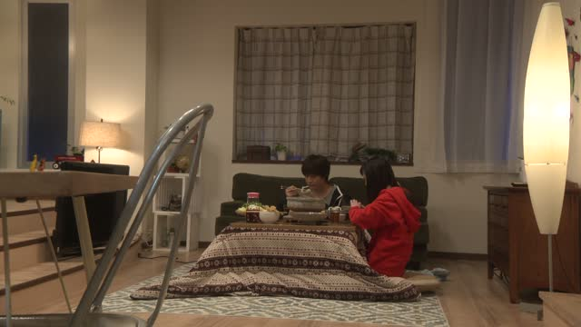
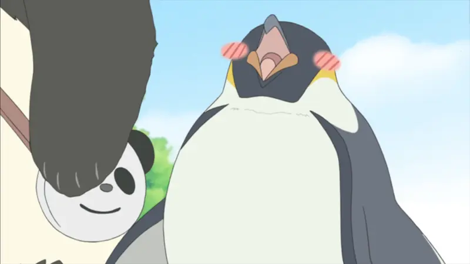
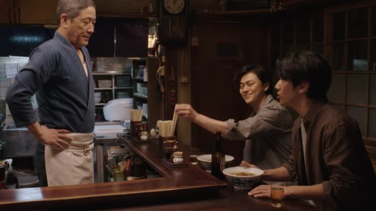
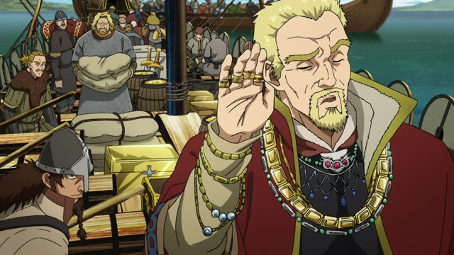

な・なあ
Good Morning Call · Episode 12
あー いい天気だな
"Ah, what nice weather."
な at the end of a casual sentence is a feeling said out loud: "huh", "man", "what a...". You're half talking to yourself, so nobody has to answer.
It's close to ね, but ね reaches out to the other person, な stays with you. After a noun or な-adjective, add だ first: いい天気 + だ + な. On this card, he looks out over the park and just says what he feels.
な is casual only and sounds a bit masculine. In polite speech, use ですね instead.
Midnight Diner: Tokyo Stories · Season 2, Episode 3
久しぶりだなあ
"It's been ages, huh."
Stretched to なあ, the feeling gets longer, like a sigh. On this card, he sees someone he hasn't met in a long time: 久しぶり + だ + なあ.
After a noun or な-adjective, add だ first.
| Word | Add | Ending | ||
|---|---|---|---|---|
| Noun | 学生 | だ | な | A student, huh. |
| な-adjective | 静か | だ | な | It's quiet, huh. |
| Verb | 行く | – | な | Careful: this one can also mean "Don't go!" |
| い-adjective | 高い | – | な | It's pricey, huh. |
Quick Examples
Stepping outside on a winter morning.
寒いな。
"Man, it's cold."
Said to yourself. Nobody has to answer.
CasualA friend shows you their new car.
かっこいい車だな。
"That's a cool car."
A noun at the end, so だ comes before な.
CasualWaiting at the station, the train is late.
遅いなあ。
"It's taking forever..."
なあ: a longer sigh.
CasualWith and without
行くな！
"Don't go!" Dictionary form + な, said firmly: an order.
行きたいな。
"I'd love to go." After ～たい, an adjective, a noun + だ or a past form, な is always the feeling.
Examples from Media
The Wind Rises
惜しいなぁ
"So close…"
い-adjective + なぁ, no だ needed.
Legal High · Season 2, Episode 9
暑いな～
"It's hot, huh."
A comment on the weather, half to himself.

Good Morning Call · Episode 6
降ってきたな
"It's started raining."
He hears the rain outside. A past verb + な is never "Don't". That's only the dictionary form.

Shirokuma Cafe · Episode 2
いつまでもこうして歩いていたいな。
"I want to walk like this forever."
～たいな: a wish said out loud.
Shirokuma Cafe · Episode 47
愚問だな
"What a silly question."
Noun + だ + な.

Midnight Diner: Tokyo Stories · Season 2, Episode 8
懐かしいなあ
"Oh, that takes me back!"
He sees a dish he loved in middle school.
JoJo's Bizarre Adventure · Episode 12
籠の中身は食料品だなあ
"The basket's full of groceries."
Noticing something out loud: noun + だ + なあ.

Vinland Saga · Episode 7
フランク語は分からんなあ
"I don't understand Frankish."
分からん is a rough 分からない. なあ turns it into a shrug.
Further Reading
Tae Kim's Guide to Japanese Grammar
Review and more sentence-ending particles · 「な」 and 「さ」 sentence-ending particles